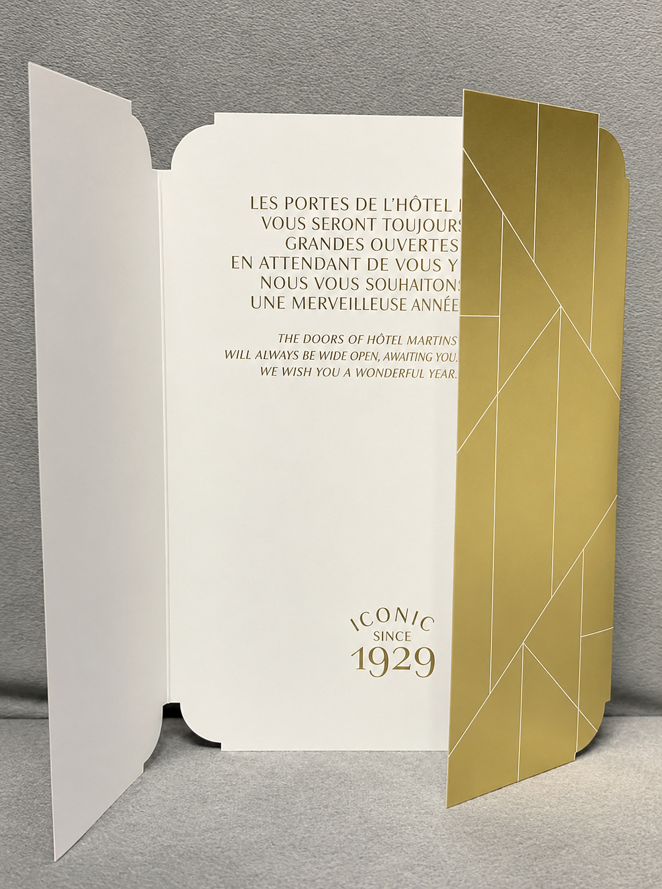
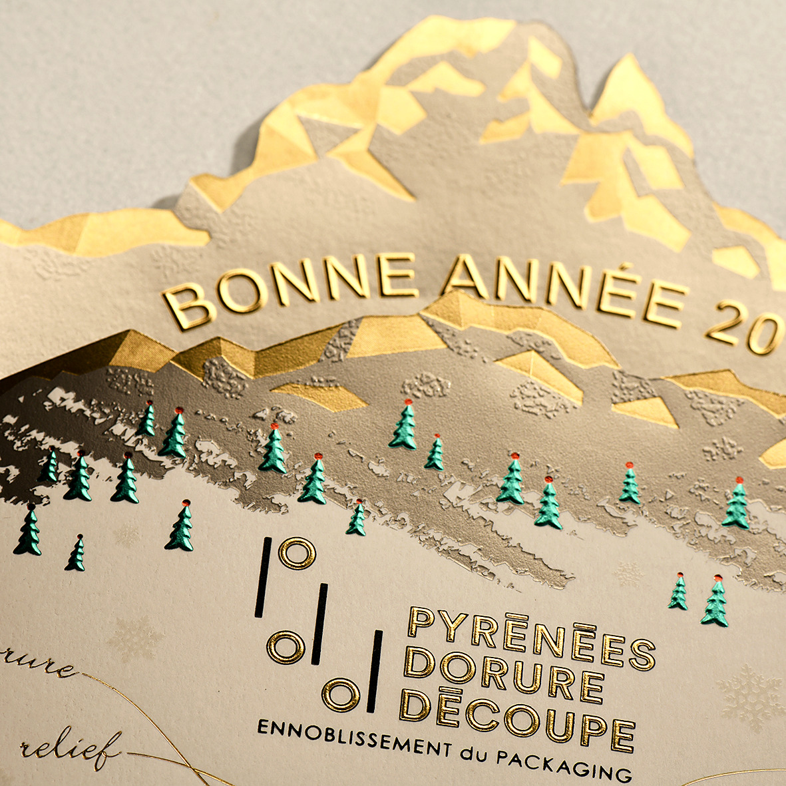
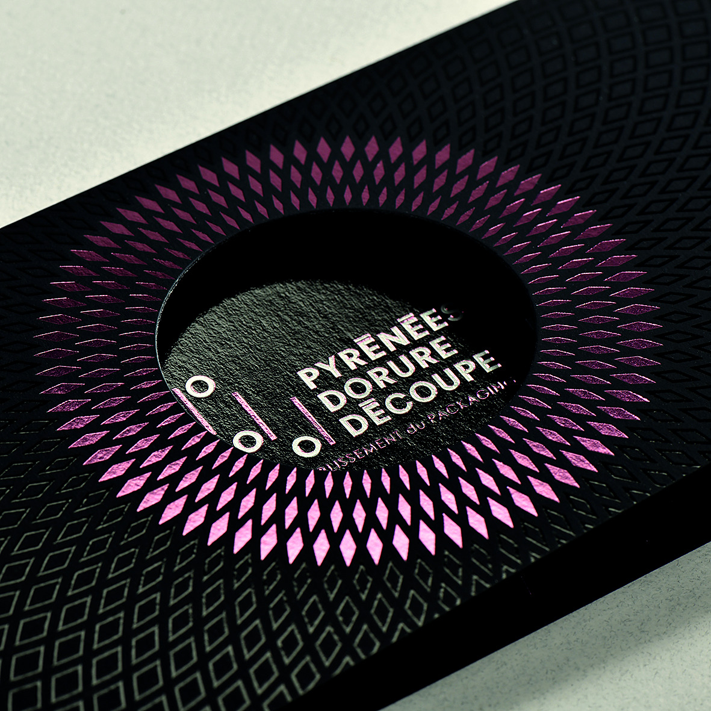

Accueil / Savoir-faire / Découpe
Découpe
Des contours nets et une forme précise. Votre pièce sort de la feuille telle que vous l'avez dessinée : une silhouette, des plis qui tombent juste.

La forme se détache
Le tracé suit fidèlement votre dessin, puis la pièce se libère de la feuille. Les bords restent nets, sans bavure.
Ce que nous réalisons
De la carte à la silhouette inattendue à l'étui qui se monte sans effort, pour les imprimeurs du luxe, de la cosmétique, de la parfumerie et de la papeterie.

Découpe de forme
La forme de découpe dessine la silhouette de votre pièce : elle quitte le rectangle et gagne une troisième dimension.

Découpe et rainage
Des plis nets, au bon endroit : volets, rabats et pochettes se plient sans casser.

Découpe et dorure
La découpe est calée au plus près de votre dorure ou de votre gaufrage : la forme et le décor ne font qu'un.
En pratique
- Format maximum
- 64 × 90 cm
- Supports
- Papier et carton compact, de 0,1 à 1,8 mm
- Découpes
- Forme et rainage
- Repérage
- Calée sur votre impression, votre dorure ou votre gaufrage
- Délai moyen
- 1 à 2 semaines, transport compris
- Essais
- Possibles pour les dossiers techniques
Questions fréquentes
Quel fichier fournir pour une découpe ?
Un tracé vectoriel au trait, sur un calque séparé et nommé, avec les rainages en pointillés. Notre guide de préparation détaille chaque point.
Peut-on découper une pièce pelliculée ou vernie ?
Oui. La découpe vient en dernier, une fois les autres finitions posées : la forme tombe nette sur la pièce terminée.
La découpe peut-elle suivre une dorure ou un gaufrage ?
Oui. La découpe est calée sur les finitions déjà posées, pour que la forme tombe exactement autour du décor.
Un projet de découpe ?
Se combine avec la dorure à chaud, le gaufrage, le pelliculage et le vernis sélectif, dans le même atelier.